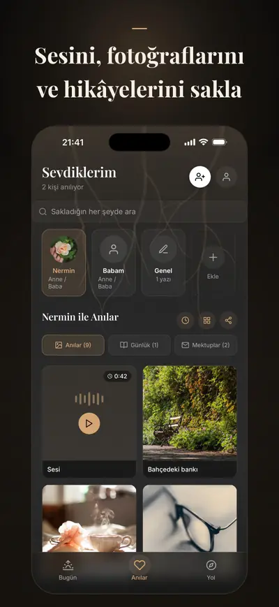
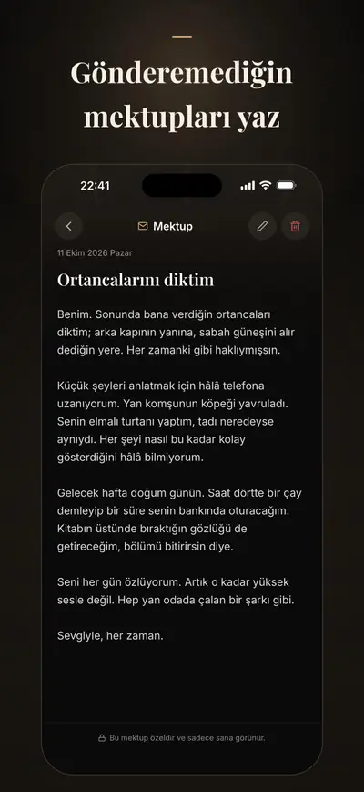
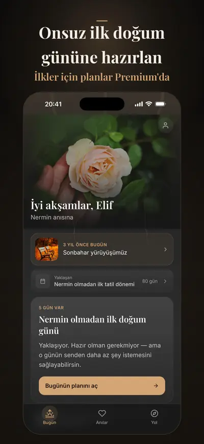

Solace Tree: Yas & Anı Defteri
Kaybettiğine mektup ve dua
Solace Tree, kaybettiğin kişi için bir yas ve anı defteri: fotoğraflarını, sesini ve hikâyelerini sakla, ona gönderemediğin mektupları yaz, zor günlere hazırlan.
iPhone için. Ücretsiz başlarsın; Premium isteğe bağlı.



Premium ile onsuz ilk bayramı ve diğer ilkleri kendi belirlediğin tarihlerde planlarsın, sakladıklarını bir hatıra kitabına dönüştürürsün; AB'deki şifreli yedeğin de yeni iPhone'una geri gelir.
Kaybın ardından gelen, herkesin artık iyi olmanı beklediği ama senin hâlâ iyi olmadığın aylar için yapıldı. Anılar, yönlendirmeli mektuplar, günlük, doğum günü ve ölüm yıldönümü, check-in, nefes egzersizleri ve kriz desteği ücretsizdir ve ücretsiz kalır. Burada hiçbir şey seni sıkıştırmaz, puan tutmaz; sen istemedikçe yazdığın hiçbir şey paylaşılmaz.
ANILARINI SAKLA
- Fotoğraflar, videolar ve ses kayıtları, ardındaki hikâyelerle birlikte
- Andığın her kişi için bir anı zaman çizgisi
- Telefonuna dağılmış ne varsa, tek ve sakin bir yerde
ONA YAZ
- Yönlendirmeli mektuplar; Premium ile daha derin mektup yolları: söyleyemediklerin, teşekkür etmek istediklerin, seninle kalacak olanlar
- Kelimelerin gelmediği günler için nazik düşünce soruları
- Arada kalan her şey için yalnızca sana ait bir günlük
ZOR GÜNLERE HAZIRLAN
- Doğum günü ve ölüm yıldönümü; Premium ile Anneler Günü ya da Babalar Günü ve onsuz geçen ilk bayram, kendi belirlediğin tarihlerde
- Tutunabileceğin küçük ritüeller: bir nefes, bir anı, sessiz bir an; Premium ile bir mektup, bir ziyaret ya da bir mum
- Birkaç gün önceden gelen yumuşak hatırlatmalar, o gün seni hazırlıksız yakalamasın diye
ANILARI HATIRAYA DÖNÜŞTÜR (PREMIUM YA DA HATIRA PAKETİ)
- Hatıra kitabı, anı zaman çizgisi ya da anma kartları; yazdırmaya ya da saklamaya hazır
- Kaydettiklerinden, iPhone'unda hazırlanır
AĞIR ANLAR İÇİN
- Puansız, yargısız, kısa bir günlük check-in
- Yas bedenine çöktüğünde nefes ve topraklama egzersizleri
- Kaybın ardından ilk haftalar için 30 günlük yönlendirmeli bir program
- Hayatında yeri varsa, inanç geleneklerinden teselli
- Bir uygulamanın veremeyeceği bir desteğe ihtiyaç duyduğunda, tek dokunuşla kriz hattı ya da acil yardım
GİZLİLİK ÖNCE GELİR
Anıların ve yazdıkların iPhone'unda saklanır; check-in'lerin, ruh hallerin ve seçtiğin inanç ise Premium ile bile oradan hiç çıkmaz. Reklam ve takip yok; sen istemedikçe yazdığın hiçbir şey paylaşılmaz. Premium ile bir kopyası AB'deki bulut yedeğinde, aktarımda ve depolamada şifreli olarak tutulur; Profil'den Apple ile devam edersen telefonun kaybolsa bile yeni iPhone'una geri gelir.
PREMIUM
Premium şunları ekler:
- Daha fazla zor gün için planlar: onsuz ilk bayram, diğer ilkler ve kendi belirlediğin tarihler
- Mektup, ziyaret ve mum ritüelleriyle ritüel paketleri
- Daha fazla mektup şablonu ve düşünce sorusuyla daha derin yazma yolları
- Sınırsız sevdiğin kişi, anı ve günlük yazısı
- Hatıra dışa aktarmaları: hatıra kitapları ve anı zaman çizgileri
- Bulut yedeği ve eşitleme; fotoğraf, video ve ses kayıtları için 250 MB dahil
Solace Tree bir yol arkadaşıdır; profesyonel desteğin yerini tutmaz. Ülkelere göre kriz hatları ve acil durum numaraları
Türkçe, İngilizce, Almanca, İspanyolca, Fransızca ve Arapça olarak kullanılabilir.